Chapitre 2 Analyse discriminante linéaire
L’analyse discriminante linéaire est un algorithme de référence en classification supervisée. Il peut être appréhendé de deux façons complémentaires :
- une approche géométrique qui revient à chercher des hyperplans qui séparent au mieux les groupes ;
- une approche modèle qui fait l’hypothèse que les lois des covariables sont des vecteurs gaussiens avec des valeurs de paramètres différentes pour chaque groupe.
On considère \((x_1,y_1),\dots,(x_n,y_n)\) un échantillon où \(x_i\) est à valeurs dans \(\mathbb R^d\) et \(y_i\) dans \(\{0,1\}\). L’approche géométrique revient à chercher une droite de \(\mathbb R^d\) d’équation \(a_1x_1+\dots+a_dx_d=0\) telle que :
- les centres de gravité de chaque groupe projeté sur cette droite soit au mieux séparé \(\Longrightarrow\) maximiser la distance inter-classe.
- les observations projetés soient proches de leur centre de gravité projeté \(\Longrightarrow\) minimiser la distance intra-classe.
Le compromis entre ces deux distances s’obtient en maximisant le coefficient de Rayleigh qui est le quotient entre ces deux distance : \[J(a)=\frac{B(a)}{W(a)}=\frac{a^tBa}{a^tWa}\] où \(B\) et \(W\) sont les matrices inter et intra classes définies pas \[B=\frac{1}{n}\sum_{k=1}^Kn_k(g_k-g)(g_k-g)^t\quad\text{et}\quad W=\frac{1}{n}\sum_{k=1}^Kn_kV_k\quad\text{avec}\quad V_k=\frac{1}{n_k}\sum_{i:Y_i=k}(X_i-g_k)(X_i-g_k)^t.\]
Ici \(g\) désigne le centre de gravité du nuage \(x_i,i=1,\dots,n\) et \(g_k,k=0,1\) les centres de gravité des deux groupes. La solution est donnée par un vecteur propre associé à la plus grande valeur propre de \(W^{-1}B\).
L’approche modèle fait l’hypothèse que les vecteurs \(X|Y=k,k=0,1\) sont des vecteurs gaussiens d’espérance \(\mu_k\in\mathbb R^d\) et de matrice de variance covariance \(\Sigma\). Ces paramètres sont estimés par maximum de vraisemblance et on déduit les probablités a posteriori par la formule de Bayes : \[\mathbf P(Y=k|X=x)=\frac{\pi_kf_{X|Y=k}(x)}{f(x)}\] Le lien entre ces deux approches est établi dans l’exercice 2.4. Nous proposons dans cette partie quelques exercices pour mettre en œuvre et analyser des analyses discriminantes avec R.
2.1 Prise en main : LDA et QDA sur les iris de Fisher
On considère les données sur les iris de Fisher.
A l’aide de la fonction PCA du package FactoMineR, réaliser une ACP en utilisant comme variables actives les 4 variables quantitatives du jeu de données. On mettra la variable
Speciescomme variable qualitative supplémentaire (optionquali.sup).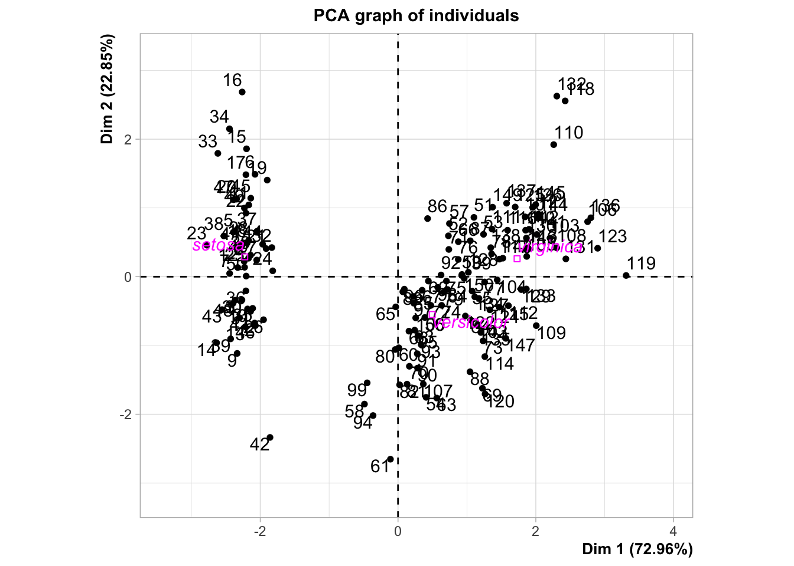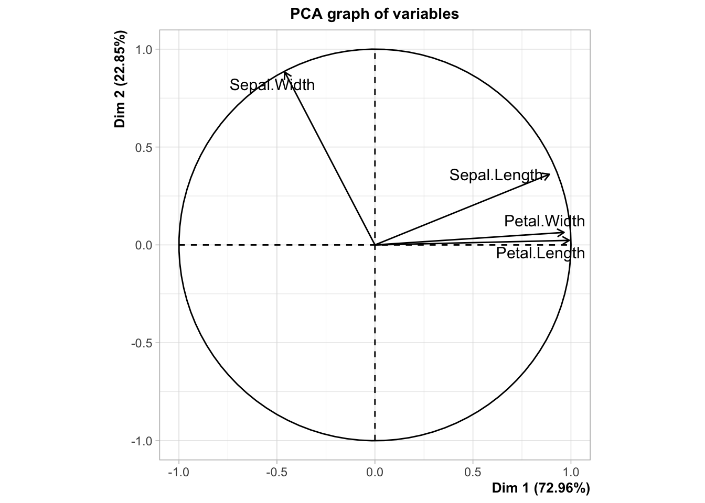
Représenter le nuage des individus sur les 2 premiers axes de l’ACP en utilisant une couleur différente pour chaque espèce d’iris (option
habillage).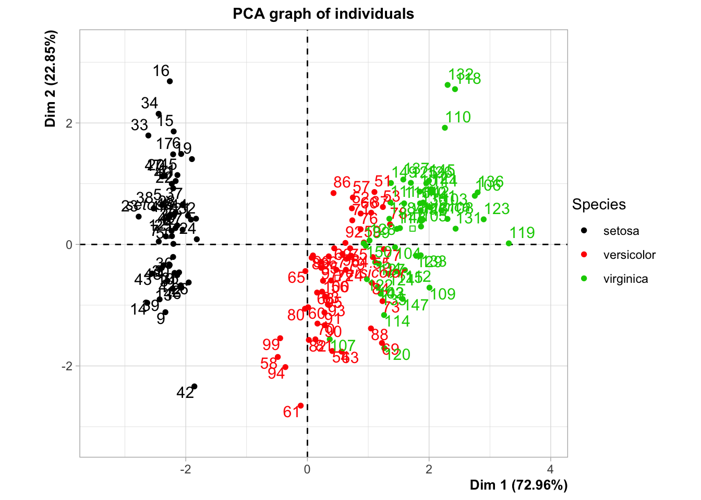
A l’aide de la fonction lda du package MASS, effectuer une analyse discriminante linéaire permettant d’expliquer l’espèce par les 4 autres variables explicatives.
Représenter le nuage des individus sur les deux premiers axes de l’analyse discriminante linéaire (en utilisant une couleur différente pour chaque espèce d’iris).
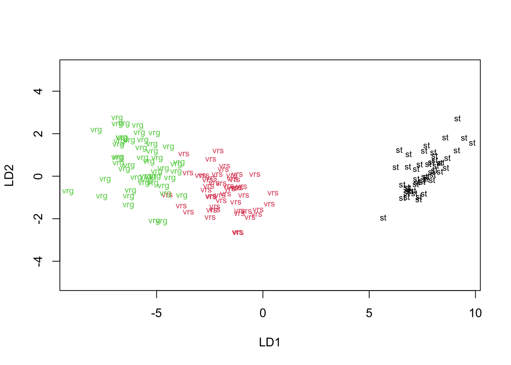
Rappeler comment sont obtenues les coordonnées des individus sur chaque axe. En déduire une interprétation de la position des individus.
Les coodonnées se déduisent en projetant les observations sur les variables discriminantes. On peut récupérer ces dernières dans
mod.lda$scaling LD1 LD2 Sepal.Length 0.8293776 0.02410215 Sepal.Width 1.5344731 2.16452123 Petal.Length -2.2012117 -0.93192121 Petal.Width -2.8104603 2.83918785on déduit que l’axe 1 oppose les individus ayant des grosses Sépales (à droite) à ceux ayant des grosses pétales (à gauche).
Comparer les représentations des questions 2 et 4.
Pour le problème considéré, la représentation de la question 4 parait plus pertinente. C’est normal dans la mesure où elle prend en compte les groupes des individus pour construire les axes (contrairement à l’ACP).
Expliquer les sorties des commandes suivantes (
mod.ldaest l’objet construit avec la fonction lda).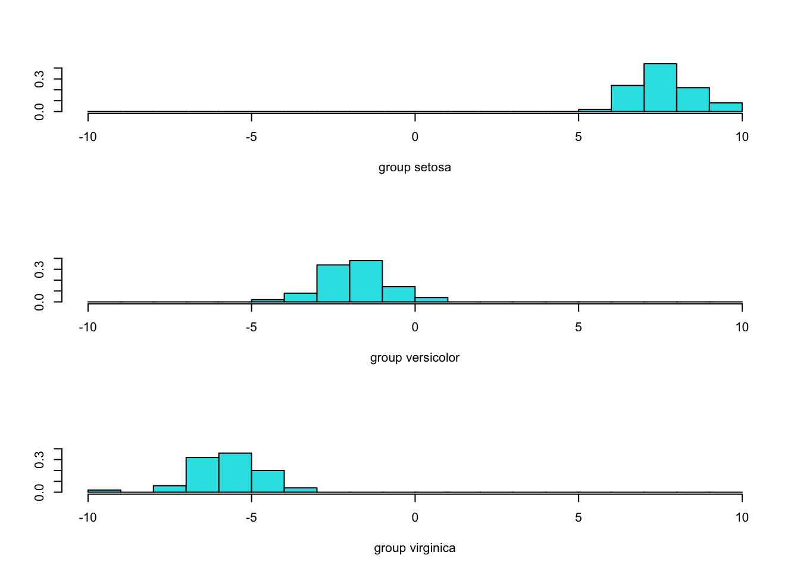
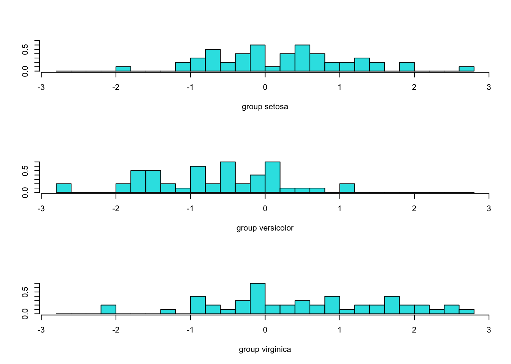
Score contient les coordonnées des projections des individus sur les axes de l’analyse discriminante. On obtient ensuite les histogrammes correspondants aux distributions des coordonnées pour chaque groupe. On visualise clairement que le premier axe est très discriminant. C’est renforcé par la sortie :
qui restitue, en proportion, la valeur du coefficient de Rayleigh de chaque axe discriminant.
Exécuter et analyser les sorties de la commande
Une validation croisée est ici effectuée pour prédire les probabilités a posteriori ainsi que les groupes de chaque observation. On peut obtenir ces prévisions avec
head(mod.lda2$class) [1] setosa setosa setosa setosa setosa setosa Levels: setosa versicolor virginica head(mod.lda2$posterior) setosa versicolor virginica 1 1 5.087494e-22 4.385241e-42 2 1 9.588256e-18 8.888069e-37 3 1 1.983745e-19 8.606982e-39 4 1 1.505573e-16 5.101765e-35 5 1 2.075670e-22 1.739832e-42 6 1 5.332271e-21 8.674906e-40Comparer, en terme d’erreur de prévision, les performances de LDA et QDA.
Il suffit de confronter les valeurs prédites aux valeurs observées :
mod.qda <- qda(Species~.,data=iris,CV=TRUE) mean(mod.lda2$class!=iris$Species) [1] 0.02 mean(mod.qda$class!=iris$Species) [1] 0.02666667On peut retrouver ces résultats avec une syntaxe dplyr :
2.2 Un cas avec beaucoup de classes
On considère les jeux de données Vowel (training et test) qui se trouvent à cet url. On peut les importer avec
dapp <- read_csv("https://web.stanford.edu/~hastie/ElemStatLearn/datasets/vowel.train")[,-1]
dtest <- read_csv("https://web.stanford.edu/~hastie/ElemStatLearn/datasets/vowel.test")[,-1]Expliquer le problème.
Il s’agit d’expliquer la variable
yqui admet 11 modalités par les 9 autres variables qui sont toutes quantitatives. On transforme donc la variable cible en facteur :Effectuer une analyse discriminante linéaire (uniquement avec les données d’apprentissage) et visualiser les individus sur les 2 premiers axes de l’analyse discriminante. On pourra utiliser predict.
Il faut ici récupérer les coordonnées des individus sur chaque axe :
On peut ainsi obtenir le graphe demandé.
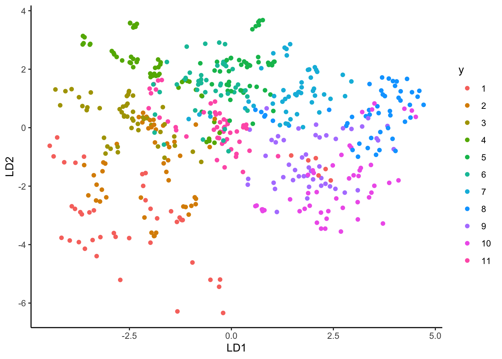
La fonction suivante permet de choisir les axes à visualiser, ainsi que les centres de gravité projetés des groupes.
repres_axes <- function(prev,cdg,axe1=1,axe2=2){ cdg <- prev %>% group_by(y) %>% summarise_all(mean) nom1 <- paste("LD",as.character(axe1),sep="") nom2 <- paste("LD",as.character(axe2),sep="") ggplot(prev)+aes_string(x=as.name(nom1),y=as.name(nom2))+ geom_point(aes(color=y))+ geom_point(data=cdg,aes(color=y),shape=17,size=4)+ theme_classic() }Étudier la pertinence des axes.
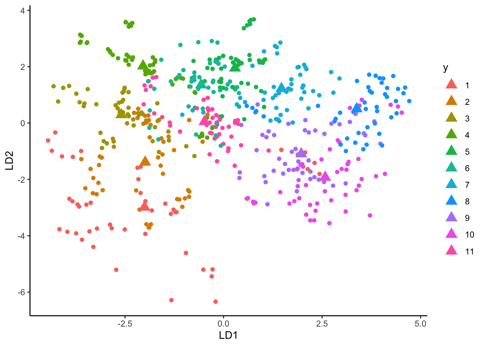
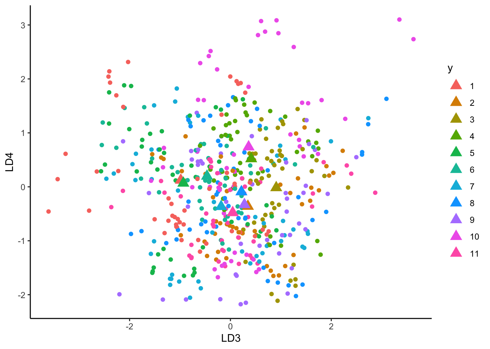
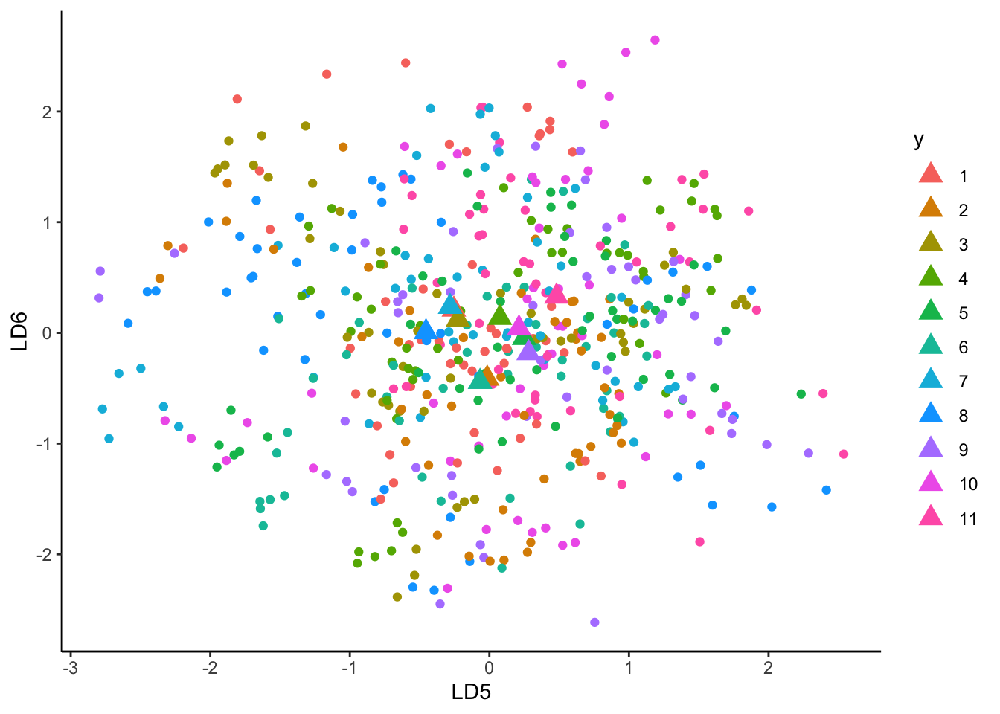
Les groupes sont mieux séparés sur les premiers axes de l’analyse, ce qui est logique. On peut le vérifier en étudiant la sortie Proportion of trace de la fonction lda que l’on peut retrouver avec
Représenter les individus sur le premier plan factoriel de l’ACP, on utilisera une couleur différente pour chaque groupe. On pourra utiliser le package FactoMineR.
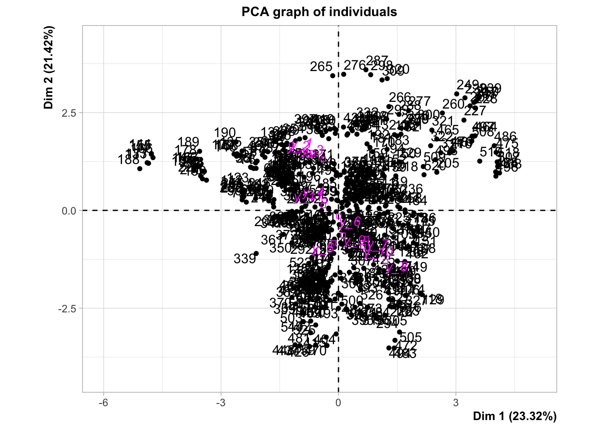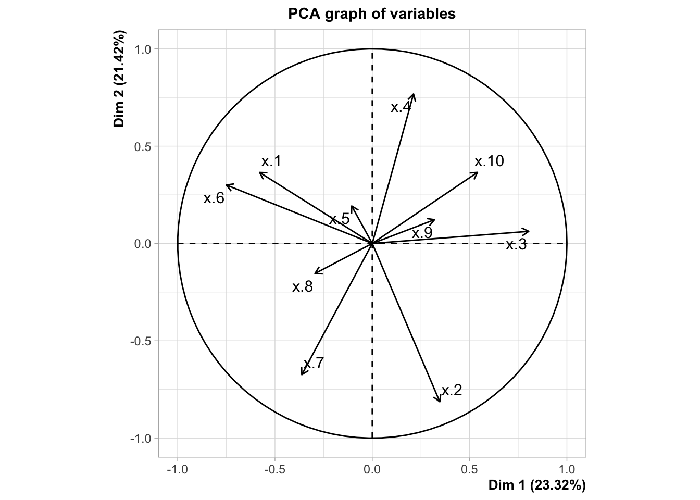
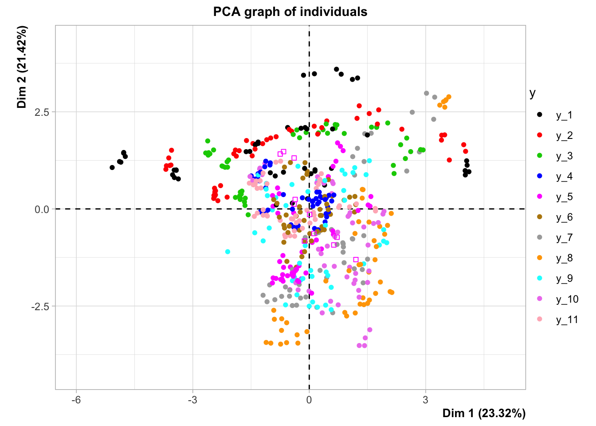
Comparer cette projection avec celle obtenue par l’analyse discriminante linéaire.
La projection de l’ACP semble moins séparer les groupes que l’analyse discriminante. Ca parait logique puisque l’ACP ne prend pas en compte les groupes pour construire ses axes.
Évaluer la performance de la lda sur les données test. Comparer avec l’analyse discriminante quadratique.
mod.qda <- qda(y~.,data=dapp) preva <- data.frame(LDA=predict(mod,newdata=dtest)$class,QDA=predict(mod.qda,newdata=dtest)$class,y=dtest$y) preva %>% summarise_at(1:2,~mean(y!=.)) LDA QDA 1 0.5562771 0.5281385QDA est légèrement plus performante pour le critère étudié.
Expliquer comment on peut faire de la prévision en réduisant la dimension de l’espace des \(X\).
Au lieu de projeter sur tous les axes, on considère uniquement les projections sur les \(k\) premiers axes de l’analyse discriminante. Cela permet de réduire la dimension et (éventuellement) de supprimer du bruit (qui se retrouve souvent sur les derniers axes). Cette métode s’appelle Reduced-rank discriminant analysis
Proposer une méthode permettant de choisir le meilleur nombre d’axes. On pourra notamment utiliser l’option
dimende la fonction predict.lda.Cette option permet en effet d’utiliser uniquement les premiers axes de l’analyse discriminante. On peut ainsi estimer la probabilité d’erreur en fonction de la dimension de l’espace sur lequel on projette :
prev_lab <- predict(mod,newdata=dtest)$class mean(prev_lab!=dtest$y) [1] 0.5562771 PREV <- matrix(0,ncol=10,nrow=nrow(dtest)) %>% as.data.frame() for (i in 1:10){ PREV[,i] <- predict(mod,newdata=dtest,dimen=i)$class } names(PREV) <- paste("P",1:10,sep="") PREV %>% mutate(y=dtest$y) %>% summarise_at(1:10,~mean(y!=.)) %>% round(3) P1 P2 P3 P4 P5 P6 P7 P8 P9 1 0.699 0.491 0.496 0.511 0.515 0.554 0.554 0.556 0.552 P10 1 0.556On remarque que l’erreur est minimale en projetant uniquement sur les deux premiers axes. Cette erreur est de plus comparable avec celle obtenue pour QDA.
2.3 Grande dimension : reconnaissance de phonèmes
On considère le jeu de données phoneme téléchargeable à l’url https://github.com/cran/ElemStatLearn/blob/master/data/phoneme.RData.
Expliquer le problème et représenter pour chaque groupe la courbe moyenne.
Il s’agit d’expliquer un son parmi 5 à partir de courbes discrétisées en 256 points. On peut tracer la courbe moyenne pour chaque groupe avec :
moy_groupe <- donnees %>% group_by(g) %>% summarise_all(mean) names(moy_groupe)[2:257] <- as.character(1:256) moy_plot <- moy_groupe %>% pivot_longer(-g,names_to="x",values_to="values") ggplot(moy_plot)+aes(x=as.numeric(x),y=values,color=g)+geom_line(size=1)+xlab("x")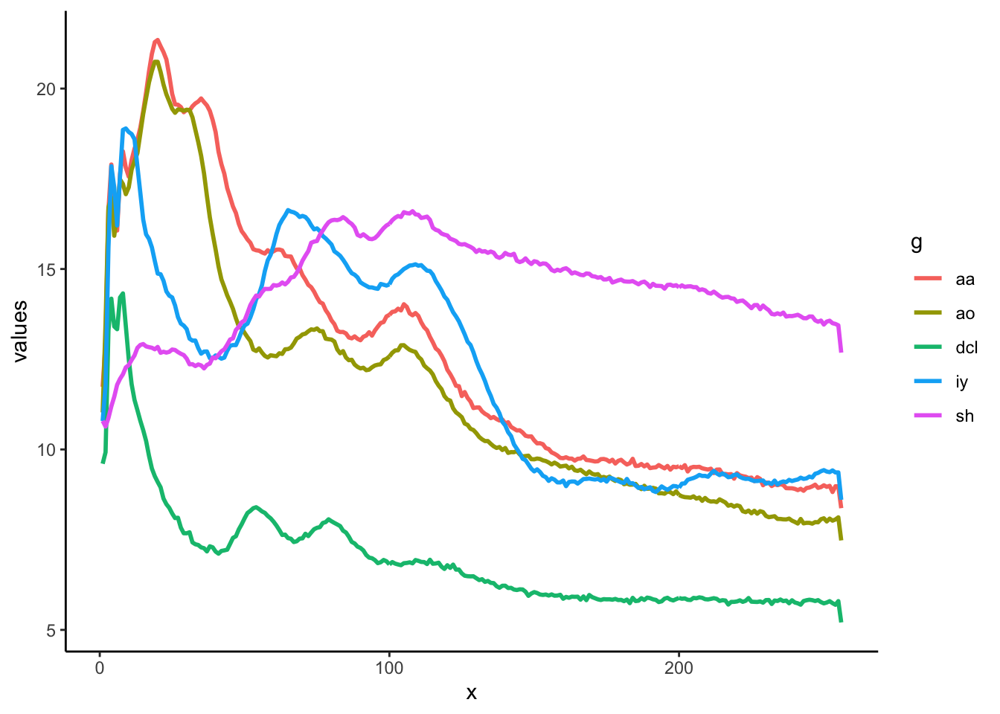
Séparer les données en un échantillon d’apprentissage de taille 3000 et un échantillon test de taille 1509.
Effectuer une analyse discriminante linéaire et une analyse discriminante quadratique sur les données d’apprentissage uniquement. Évaluer les performances de ces deux approches sur les données test.
On calcule tout d’abord lda et qda sur les données d’apprentissage :
On prédit les individus de l’échantillon test pour en déduire l’erreur :
Quels peuvent être les intérêts d’effectuer une analyse discriminante régularisée dans ce contexte ? Effectuer une telle analyse à l’aide de la fonction rda du package klaR.
Le nombre de variables est élevé, par conséquent on se retrouve avec beaucoup de paramètres à estimer. De plus, les données étant fonctionnelles, on a de la corrélation entre les les variables explicatives (ce qui est rarement bon pour bien estimer). On fait la rda sur les données d’apprentissage :
On prédit le test et on compare avec les autres modèles :
Sélectionner les paramètres de régularisation à l’aide du package caret. Comparer le nouveau modèle aux précédents.
On définit deux grilles de longueur 5 pour les paramètres
lambdaetgamma, et on fait une validation croisée 5 blocs pour sélectionner les paramètres. On parallélise sur 4 cœurs pour réduire le temps de calcul.gamma <- seq(0,1,by=0.25) lambda <- seq(0,1,by=0.25) grille <- expand.grid(lambda=lambda,gamma=gamma) ctrl1 <- trainControl(method="cv",number=5) library(doMC) registerDoMC(4) rda.pho2 <- caret::train(g~.,data=donnees,method="rda", trControl=ctrl1,tuneGrid=grille) registerDoMC(1)On évalue et compare les performances :
caret::getTrainPerf(rda.pho2) TrainAccuracy TrainKappa method 1 0.9288063 0.9101211 rda prev3 <- predict(rda.pho2,newdata=dtest) prev.pho <- prev.pho %>% mutate(RDA2=prev3) prev.pho %>% summarise_at(vars(-3),~mean(obs!=.)) %>% round(3) LDA QDA RDA RDA2 1 0.07 0.176 0.059 0.043La régularisation a permis d’améliorer les performances.
2.4 Exercices
On dispose de \(n\) observations \((x_1,y_1),\dots,(x_n,y_n)\) telles que \(x_i\in\mathbb R^p\) et \(y_i\in\{0,1\}\) pour \(i=1,\dots,n\). On souhaite expliquer les sorties \(y_i\) par les entrées \(x_i\).
Rappeler la définition d’une règle de prévision.
C’est une fonction \(g:\mathbb R^p\to\{0,1\}\).
Rappeler la définition de la règle de Bayes \(g^\star\) et de l’erreur de Bayes \(L^\star\).
La règle de Bayes est définie par \[g^\star(x)=\left\{ \begin{array}{ll} 1&\text{si }\mathbf P(Y=1|X=x)\geq 0.5 \\ 0&\text{sinon.} \end{array}\right.\] L’erreur de Bayes est définie par \(L^\star=\mathbf P(g^\star(X)\neq Y)\).
Soit \(g\) une règle de décision. Montrer que \[\mathbf P(g(X)\neq Y|X=x)=1-(\mathbf 1_{g(x)=1}\eta(x)+\mathbf 1_{g(x)=0}(1-\eta(x)))\] où \(\eta(x)=\mathbf P(Y=1|X=x)\).
On a \[\begin{align*} \mathbf P(g(X)\neq Y|X=x) &= 1-\left(\mathbf P(g(X)=Y,g(X)=1|X=x)+\mathbf P(g(X)=Y,g(X)=0|X=x)\right) \\ &= 1-\left(\mathbf 1_{g(x)=1}\mathbf P(Y=1|X=x)+\mathbf 1_{g(x)=0}\mathbf P(Y=0|X=x)\right) \\ &= 1-(\mathbf 1_{g(x)=1}\eta(x)+\mathbf 1_{g(x)=0}(1-\eta(x))). \end{align*}\]
En déduire que pour tout \(x\in\mathcal X\) et pour toute règle \(g\) \[\mathbf P(g(X)\neq Y|X=x)-\mathbf P(g^\star(X)\neq Y|X=x)\geq 0.\] Conclure.
On déduit \[\begin{align*} \mathbf P(g(X)\neq &Y|X=x)-\mathbf P(g^\star(X)\neq Y|X=x) \\ &= \eta(x)\left(\mathbf 1_{g^\star(x)=1}-\mathbf 1_{g(x)=1}\right)+(1-\eta(x))\left(\mathbf 1_{g^\star(x)=0}-\mathbf 1_{g(x)=0}\right) \\ &= (2\eta(x)-1) \left(\mathbf 1_{g^\star(x)=1}-\mathbf 1_{g(x)=1}\right) \\ &\geq 0 \end{align*}\] par définition de \(g^\star\). On conclut en intégrant par la loi de \(X\) que \[\mathbf P(g(X)\neq Y)\geq \mathbf P(g^\star(X)\neq Y).\]
On considère \((X,Y)\) un couple aléatoire à valeurs dans \(\mathbb R\times\{0,1\}\) tel que \[\begin{equation*} X\sim\mathcal U[-2,2]\quad\text{et}\quad (Y|X=x)\sim\left\{ \begin{array}{ll} \mathcal B(1/5) & \textrm{si } x\leq 0 \\ \mathcal B(9/10) & \textrm{si } x>0 \end{array}\right. \end{equation*}\] où \(\mathcal U[a,b]\) désigne la loi uniforme sur \([a,b]\) et \(\mathcal B(p)\) la loi de Bernoulli de paramètre \(p\). Calculer la règle de Bayes et l’erreur de Bayes.
Si \(x\leq 0\), on a \(\mathbf P(Y=1|X=x)=\frac{1}{5}\) et si \(x>0\), \(\mathbf P(Y=1|X=x)=\frac{9}{10}\). Ainsi \[g^\star(x)=\left\{ \begin{array}{ll} 0 &\text{si }x\leq 0\\ 1 &\text{si }x>0. \end{array}\right. \] L’erreur de Bayes vaut \[L^\star=\mathbf P(g^\star(X)\neq Y|X\leq 0)\mathbf P(X\leq 0)+\mathbf P(g^\star(X)\neq Y|X>0)\mathbf P(X>0).\] Or \[\mathbf P(g^\star(X)\neq Y|X\leq 0)=\mathbf P(Y\neq 0|X\leq 0)=\frac{1}{5}\] et \[\mathbf P(g^\star(X)\neq Y|X>0)=\mathbf P(Y\neq 1|X>0)=\frac{1}{10}.\] On obtient \[L^\star=\frac{1}{5}\,\frac{1}{2}+\frac{1}{10}\,\frac{1}{2}=\frac{3}{20}.\]
On cherche à expliquer une variable aléatoire \(Y\) à valeurs dans \(\{0,1\}\) par une variable aléatoire \(X\) à valeurs dans \(\mathbb R\).
- Quels sont les paramètres à estimer dans le modèle d’analyse discriminante linéaire.
Le modèle LDA suppose que \(X|Y=k\sim\mathcal N(\mu_k,\sigma^2)\). Il faut donc estimer \(\mu_0,\mu_1,\sigma^2\) et les probabilités \(\pi_k=\mathbf P(Y=k),j=0,1\).
- Calculer la vraisemblance conditionnelle à \(Y\) et en déduire les estimateurs des paramètres des lois gaussiennes.
On désigne par \(\mathcal I_k,k=0,1\) les indices des observations dans le groupe \(k\). On a alors \[L_{X|Y}(x_1,\dots,x_n)=\prod_{i\in\mathcal I_0}f_0(x_i) \prod_{i\in\mathcal I_1}f_1(x_i).\] On obtient ainsi \[\begin{align*} \mathcal L_{X|Y}(x_1,\dots,x_n)=-&(n_0+n_1)\log(\sqrt{2\pi})-(n_0+n_1)\log \sqrt{\sigma^2} \\ -&\frac{1}{2}\sum_{i\in\mathcal I_0}\frac{(x_i-\mu_0)^2}{\sigma^2}-\frac{1}{2}\sum_{i\in\mathcal I_1}\frac{(x_i-\mu_1)^2}{\sigma^2}. \end{align*}\] En dérivant par rapport à \(\mu_0\) et \(\mu_1\) il est facile de voir que les EMV de ces paramètres sont donnés par \[\widehat\mu_0=\frac{1}{n_0}\sum_{i\in\mathcal I_0}x_i\quad\text{et}\quad \widehat\mu_1=\frac{1}{n_1}\sum_{i\in\mathcal I_1}x_i.\] On dérive maintenant par rapport à \(\sigma^2\) : \[\frac{\partial\mathcal L_{X|Y}(x_1,\dots,x_n)}{\partial\sigma^2}=-\frac{n_0+n_1}{\sigma^2}+\sum_{i\in\mathcal I_0}\frac{(x_i-\mu_0)^2}{2\sigma^4}+\sum_{i\in\mathcal I_1}\frac{(x_i-\mu_1)^2}{2\sigma^4}.\] On déduit que l’EMV de \(\sigma^2\) est donné par \[\widehat\sigma^2=\frac{1}{n}\left(\sum_{i\in\mathcal I_0}(x_i-\widehat\mu_0)^2+\sum_{i\in\mathcal I_1}(x_i-\widehat\mu_1)^2\right).\]
- Comparer les estimateurs obtenus avec ceux du cours.
Ces estimateurs correspondent à ceux proposés dans le cours, à part pour \(\widehat\sigma^2\) où on divise par \(n-2\) au lieu de \(n\) pour débiaiser.
On cherche à expliquer une variable aléatoire \(Y\) à valeurs dans \(\{0,1\}\) par une variable aléatoire \(X\) à valeurs dans \(\mathbb R^p\).
- Rappeler le modèle d’analyse discriminante linéaire.
Le modèle LDA fait l’hypothèse que \(X|Y=k\) est un vecteur gaussien de loi \(\mathcal N(\mu_k,\Sigma)\) avec \(\mu_k\in\mathbb R^p\) et \(\Sigma\) matrice symétrique définie positive \(p\times p\).
- Soit \(x\in\mathbb R^p\) un nouvel individu. Montrer que la règle qui consiste à affecter \(x\) dans le groupe qui maximise \(\mathbf P(Y=k|X=x)\) est équivalente à la règle qui consiste à affecter \(x\) dans le groupe qui maximise les fonctions linéaires discriminantes (on prendra soin de rappeler la définition des fonctions linéaires discriminantes).
Sous le modèle LDA, maximiser \(\mathbf P(Y=k|X=x)\) est équivalent à maximiser \(\pi_kf_k(x)\) où \(f_k(x)\) est la densité d’un vecteur gaussien \(\mathcal N(\mu_k,\Sigma)\). Par conséquent cela revient à maximiser \[-\frac{1}{2}(x-\mu_k)^t\Sigma^{-1}(x-\mu_k)+\log(\pi_k),\] ou encore à chercher la fonction linéaire discriminante \[\delta_k(x)=x^t\Sigma^{-1}\mu_k-\frac{1}{2}\mu_k^t\Sigma^{-1}\mu_k+\log\pi_k.\] qui prend la plus grande valeur.
On considère un \(n\)-échantillon i.i.d. \((x_1,y_1),\dots,(x_n,y_n)\) où \(x_i\) est à valeurs dans \(\mathbb R^2\) et \(y_i\) dans \(\{0,1\}\). On cherche une droite vectorielle \(a\) telle que les projections de chaque groupe sur \(a\) soient séparées “au mieux”. Dit autrement, on cherche \(a\) telle que
- la distance entre les centres de gravité \[g_0=\frac{1}{\mbox{card}\{i:y_i=0\}}\sum_{i:y_i=0}x_i\quad\textrm{et}\quad g_1=\frac{1}{\mbox{card}\{i:y_i=1\}}\sum_{i:y_i=1}x_i\] projetés sur \(a\) soit maximale (cette distance est appelée distance interclasse) ;
- la distance entre les projections des individus et leur centre de gravité soit minimale (distance interclasse).
Pour un vecteur \(u\) de \(\mathbb R^2\), on désigne par \(\pi_a(u)\) son projeté sur la droite engendrée par \(a\). Sans perte de généralité on supposera dans un premier temps que \(a\) est de norme 1.
Rappeler les définitions des variances totale \(V\), intra \(W\) et inter \(B\) des observations \((x_1,y_1),\dots,(x_n,y_n)\).
On a \[V=\frac{1}{n}\sum_{i=1}^n(x_i-g)(x_i-g)^t,\ B=\frac{1}{n}\sum_{k=1}^Kn_k(g_k-g)(g_k-g)^t,\] \[W=\frac{1}{n}\sum_{k=1}^K\sum_{i:y_i=k}(x_i-g_k)(x_i-g_k)^t.\]
Pour \(u\) fixé dans \(\mathbb R^2\), exprimer \(\pi_a(u)\) en fonction de \(u\) et \(a\) et en déduire que \(\|\pi_a(u)\|^2=a^tuu^ta\).
On a \[\pi_a(u)=\frac{\langle u,a\rangle}{\|a\|^2}a=u^ta a\quad\text{ si }\quad\|a\|=1.\] On déduit \(\|\pi_a(u)\|^2=a^tuu^ta\).
Exprimer les variances totale \(V(a)\), intra \(W(a)\) et inter \(B(a)\) projetées sur \(a\) en fonction des variances calculées à la question 1.
On a ainsi \[V(a)=\frac{1}{n}\sum_{i=1}^n\|\pi_a(x_i-g)\|^2=\frac{1}{n}\sum_{i=1}^na^t(x_i-g)^t(x_i-g)a=a^tVa.\] On montre de même que \(B(a)=a^tBa\) et \(W(a)=a^tWa\).
On cherche maintenant à maximiser \[J(a)=\frac{B(a)}{W(a)}\] ou encore à \[\begin{equation} \textrm{maximiser }B(a)\quad\textrm{sous la contrainte}\quad W(a)=1. \tag{2.1} \end{equation}\] La méthode des multiplicateurs de Lagrange permet de résoudre un tel problème. La solution du problème de maximisation d’une fonction \(f(x)\) sujette à \(h(x)=0\) s’obtient en résolvant l’équation \[\frac{\partial L(x,\lambda)}{\partial x}=0,\quad\textrm{où}\quad L(x,\lambda)=f(x)+\lambda h(x).\]
- Montrer que la solution du problème (2.1) est un vecteur propre de \(W^{-1}B\) associé à la plus grande valeur propre de \(W^{-1}B\). On note \(a^\star\) cette solution.
On écrit le Lagrangien \[L(a,\lambda)=B(a)+\lambda W(a)=a^t(B+\lambda W)a,\] puis on le dérive par rapport à \(a\) : \[\frac{\partial L(a,\lambda)}{\partial a}=2(B+\lambda W)a.\] Par conséquent la solution \(a^\star\) vérifie \(W^{-1}Ba^\star=\lambda a^\star\), c’est donc un vecteur propre de \(W^{-1}B\). De plus, il est facile de voir que \(J(a^\star)=\lambda\), par conséquent \(a^\star\) est un vecteur propre associé à la plus grande valeur propre de \(W^{-1}B\).
- Montrer que \(a^\star\) est colinéaire à \(W^{-1}(g_1-g_0)\). On pourra admettre que, dans le cas de 2 groupes, on a
\[B=\frac{n_0n_1}{n^2}(g_1-g_0)(g_1-g_0)^t.\]
\(W^{-1}B\) possédant au plus une valeur propre non nulle, il suffit de vérifier que \(W^{-1}(g_1-g_0)\) est vecteur propre de \(W^{-1}B\). On a \[W^{-1}B W^{-1}(g_1-g_0)=\frac{n_0n_1}{n^2} W^{-1}(g_1-g_0)(g_1-g_0)^t W^{-1}(g_1-g_0)=\lambda W^{-1}(g_1-g_0)\] avec \[\lambda=\frac{n_0n_1}{n^2}(g_1-g_0)^t W^{-1}(g_1-g_0).\]
- On considère la règle géométrique d’affectation qui consiste à classer un nouvel individu \(x\in\mathbb R^p\) au groupe 1 si son projeté sur \(a^\star\) est plus proche de \(\pi_{a^\star}(g_1)\) que de \(\pi_{a^\star}(g_0)\). Montrer que \(x\) sera affecté au groupe 1 si
\[S(x)=x^tW^{-1}(g_1-g_0)>s\]
où on exprimera \(s\) en fonction de \(g_0\), \(g_1\) et \(W\).
Le nouvel \(x\) est affecté au groupe \(1\) si \(\|\pi_{a^\star}(x-g_1)\|\leq \|\pi_{a^\star}(x-g_0)\|\). Or \[\pi_{a^\star}(x-g_1)=\frac{(x-g_1)^ta_1^\star}{\|a_1^\star\|^2} a_1^\star\quad\text{et}\quad \pi_{a^\star}(x-g_0)=\frac{(x-g_0)^ta_1^\star}{\|a_1^\star\|^2} a_1^\star\] où \(a_1^\star=W^{-1}(g_1-g_0)\). Par conséquent, \(x\) est affecté au groupe 1 si \[((x-g_1)^ta_1^\star)^2\leq ((x-g_0)^ta_1^\star)^2\Longleftrightarrow -2x^ta_1^\star\times g_1^ta_1^\star+(g_1^ta_1^\star)^2\leq -2x^ta_1^\star\times g_0^ta_1^\star+(g_0^ta_1^\star)^2\] ou encore \[2x^ta_1^\star(g_0^ta_1^\star-g_1^ta_1^\star)\leq (g_0^ta_1^\star)^2-(g_1^ta_1^\star)^2=(g_0^ta_1^\star+g_1^ta_1^\star)(g_0^ta_1^\star-g_1^ta_1^\star).\] Comme \(g_0^ta_1^\star-g_1^ta_1^\star=-(g_1-g_0)^tW^{-1}(g_1-g_0)\leq 0\) on déduit que \(x\) est affecté au groupe 1 si \[2x^ta_1^\star\geq g_0^ta_1^\star+g_1^ta_1^\star \Longleftrightarrow x^tW^{-1}(g_1-g_0)\geq \frac{1}{2}(g_1+g_0)^tW^{-1}(g_1-g_0).\]
- Montrer que cette règle est équivalente à choisir le groupe qui minimise la distance de Mahalanobis
\[d(x,g_k)=(x-g_k)^tW^{-1}(x-g_k),\quad k=0,1.\]
Il est facile de voir que \(d(x,g_1)\leq d(x,g_0)\) si et seulement si \[x^tW^{-1}g_1-\frac{1}{2}g_1^tW^{-1}g_1\leq x^tW^{-1}g_0-\frac{1}{2}g_0^tW^{-1}g_0.\] D’où le résultat.
- On revient maintenant à l’approche probabiliste de l’analyse discriminante linéaire vue en cours et on considère la règle d’affectation qui consiste à décider "groupe 1’’ si \(\mathbf P(Y=1|X=x)\geq 0.5\). Montrer que dans ce cas, un nouvel individu \(x\) est affecter au groupe 1 si :
\[S(x)=x^t\Sigma^{-1}(\mu_1-\mu_0)>\frac{1}{2}(\mu_1+\mu_0)^t\Sigma^{-1}(\mu_1-\mu_0)-\log\left(\frac{\pi_1}{\pi_0}\right).\]
Conclure.
Si on se place dans le modèle Gaussien d’analyse discriminante linéaire, \(x\) est affecté au groupe 1 si \(\mathbf P(Y=1|X=x)\geq\mathbf P(Y=0|X=x)\), c’est-à-dire \[\log(\pi_1)-\frac{1}{2}(x-\mu_1)^t\Sigma^{-1}(x-\mu_1)\geq \log(\pi_0)-\frac{1}{2}(x-\mu_0)^t\Sigma^{-1}(x-\mu_0),\] ou encore \[x^t\Sigma^{-1}(\mu_1-\mu_0)\geq \frac{1}{2}(\mu_1+\mu_0)^t\Sigma^{-1}(\mu_1-\mu_0)+\log \frac{\pi_0}{\pi_1}.\] On conclut en remarquant que si
- \(\mu_0\) et \(\mu_1\) sont estimés par \(g_0\) et \(g_1\) (ce qui est le cas généralement) ;
- \(\Sigma\) est, à une constante multiplicative près, estimé par \(W\) (ce qui est le cas généralement) ;
- les probabilités a priori \(\pi_0\) et \(\pi_1\) sont égales,
alors les 2 règles coïncident.
- Montrer que la solution du problème (2.1) est un vecteur propre de \(W^{-1}B\) associé à la plus grande valeur propre de \(W^{-1}B\). On note \(a^\star\) cette solution.